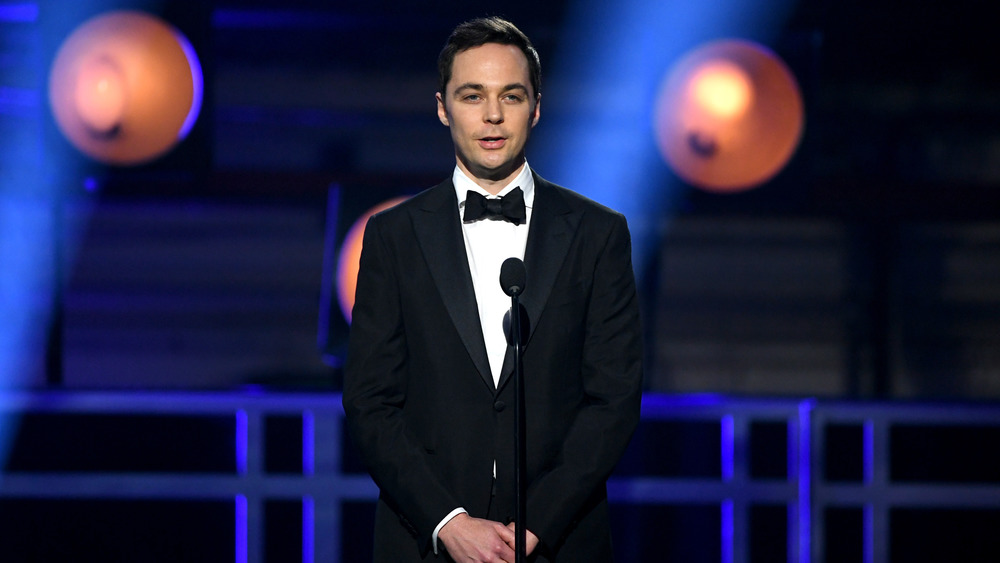

Biografia Sheldon Cooper

Howard Wolowitz, interpretado por Simon Helberg, é um engenheiro aeroespacial com mestrado no MIT que trabalha em projetos para a NASA. Ele é conhecido por seu senso de humor exagerado, seu amor pela moda extravagante e seu flerte constante (e muitas vezes inadequado) com mulheres. Apesar de não ter doutorado, ele é muito habilidoso em seu campo, tendo projetado componentes para missões espaciais. Howard eventualmente casa-se com Bernadette Rostenkowski, com quem tem dois filhos, e sua transição de solteirão para marido e pai é uma das evoluções mais significativas do personagem.